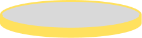
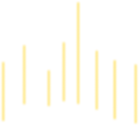
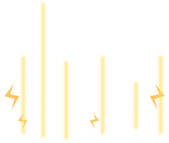
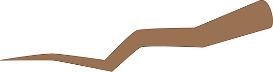

Egg Stage 0
Adult Bird
Egg Stage 1
Egg Stage 2
Egg Stage 3
Egg Stage 4
All Process



← Previous stage
Next stage →
Transition
Exit All Process

Bird preview — direction/state auto-cycles, random flights + expressions.
still · dir 0
Fly circle
Fly to branch
Force expression
Calibrate positions
Dir:
0
45
90
135
180
225
270
315
still
fly
Drag wingL / wingR / eyes
Branch growth
Egg — Stage 0 (idle egg, shakes faster as you drag).
idle
Shake speed
Egg — Stage 1 (peek, no hands).
idle
Play hatch animation
Calibrate positions
Drag a part
Egg — Stage 2 (hands, shell detaches).
idle
Play hatch animation
Pause
Calibrate positions
Drag a part
Egg — Stage 3 (legs crack out, wings/legs move).
idle
Play hatch animation
Pause
Calibrate positions
Drag a part
Egg — Stage 4 (shell cracks, falls, legs raise).
idle
Play hatch animation
Pause
Calibrate positions
Drag a part